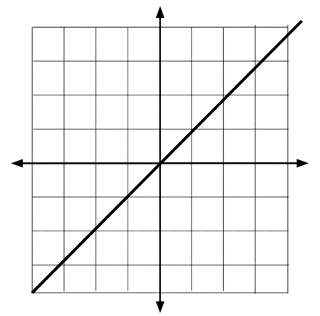

Injective, Surjective, and Bijective Functions
Introduction
Functions are relationships between variables, most commonly x and y. But functions also are classified into types such as injective, surjective and bijective depending on how many input and output values there are. These three types of functions tell us how a specific function behaves.
 A general function always has one y value being connected to multiple x values. On a graph, a general function has multiple x values having the same y value…
A general function always has one y value being connected to multiple x values. On a graph, a general function has multiple x values having the same y value…
Injective Functions (Injection)
Injective Functions are functions where there are more y values than x values…
Remember, an x value cannot have multiple y values, otherwise it wouldn’t be a function. Injective functions when shown on a graph, every x value has its own unique y value. Meaning that every pair of x and y values occurs only once…

Surjective Functions (Surjection)
Surjective Functions are functions where there are more x values than y values, this means that every range value has at least some number in the domain…
On a graph, surjective functions may have multiple points that have the same y value…
Bijective Functions (Bijection)
A Bijective function is when a function has the same amount of x and y values…
Bijective functions are surjective and injective, meaning that each number in the domain has a number in the codomain. A bijective function could have every x value have a unique y value…
Done? Here are other Links
Back to Main Page
Back to Informational